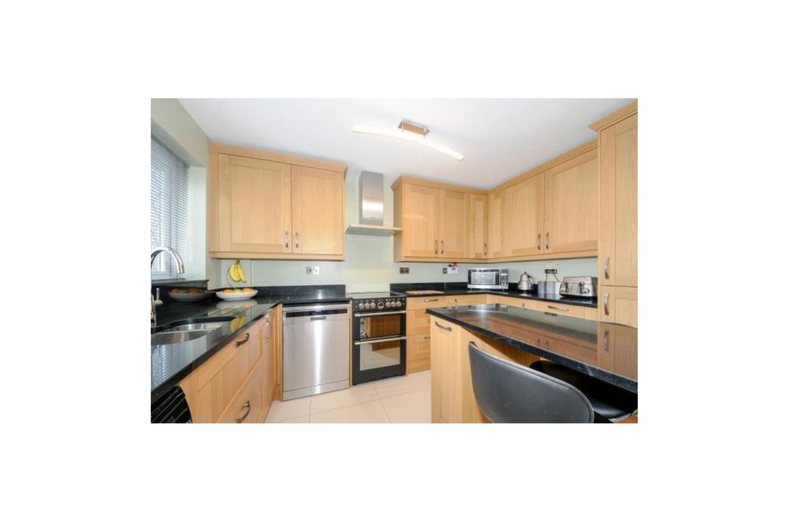
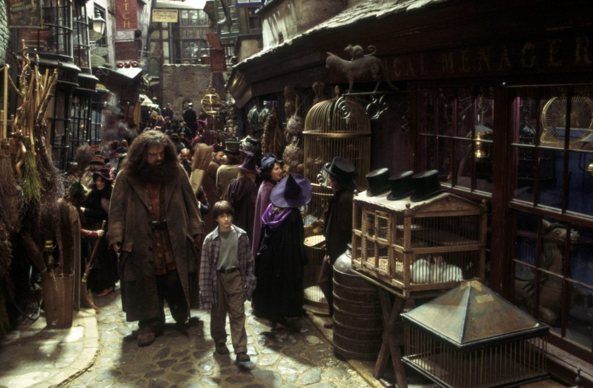
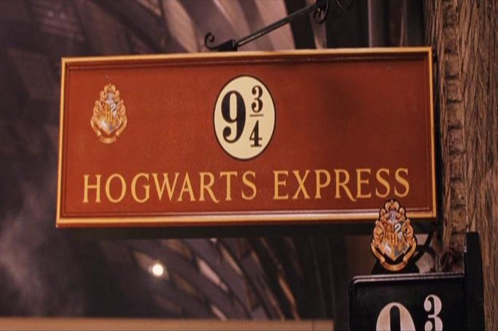

"Um dia acordei, e seria um dia comum sem muitas novidades, mas, após o café uma coisa bateu contra a
janela com um leve som. Me levantei, e para minha surpresa havia uma coruja lá fora, com uma carta em
seu bico."

Você pega a carta e a abre. Levantando uma sombrancelha em confusão você a lê cuidadosamente. Lá diz que
você foi aceito(a) para a Escola de Magia e Bruxaria de Hogwarts.
Lá você estava pronto para dormir, e prestes a fechar os olhos escutando os sons da chuva e do mar
violento lá fora, outra coisa interrompe esse descanso. A porta simplesmente é arrombada.
Apesar de seu tamanho, o homem abre um sorriso adorável e se vira para você, se apresentando como Hagrid.
Hagrid diz que veio para te levar de volta para onde pertence, para Hogwarts.

Ele joga um tipo de pó mágico e vocês aparecem na estação de trem. mas logo ele lembrando que você não
trouxe bagagem alguma, ele para e pensa, Hagrid decide ir fazer compras por Londres, mas claro, nos
lugares “certos”.

Você tenta localizar o trem 9 3/4 como Hagrid disse, e se perde totalmente até encontrar outros bruxos
passando com corujas e bagagens, você os segue e logo consegue passar pelo portal escondido em uma
parede, entrando na estação verdadeira e logo embarcando no trem.
Chegando em Hogwarts após algumas horas de viagem, você é escolhido para sua casa cuja por ironia do
destino, correspondente ao grupo o qual você se sentou no trem, e você passa seu ano letivo em companhia
destes, com muitas aventuras e descobertas.